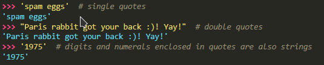

Using python to represent Text
string can be written in ' ' or " "

to use ' in string, need to use \ or " "
using print() we can use
escaped and special characters
such as \n, \t
Escape Sequences (used after \)
Escape sequences only recognized in string literals are:
A backslash can be added at the end of a line to ignore the newline:
String literals can span multiple lines. One way is using triple-quotes:
"""..."""
or
'''...'''
. End of lines are automatically included in the string, but it’s possible to prevent this by adding a \ at the end of the line
if you want to ignore escape sequence use r or R before the first quote
A raw string ending with an odd number of backslashes will escape the string’s quote
Strings can be concatenated (glued together) with the
+
operator, and repeated with
*
Strings can be
indexed
, with the first character having index 0
Indices may also be negative numbers, to start counting from the right
In addition to indexing,
slicing
is also supported
, which is used to get substring
Python strings cannot be changed — they are
immutable
. Therefore, assigning to an indexed position in the string results in an erro
r
The built-in function
len()
returns the length of a string